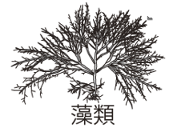
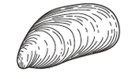
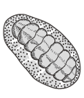

藻類（海藻など）

イガイ
 フジツボ類
フジツボ類
 カメノテ
カメノテ

ヒザラガイ
 巻貝
巻貝
 ヒトデ（キーストーン種）
ヒトデ（キーストーン種）
実験条件の設定
ヒトデ：
巻貝：
現在の実験区：ヒトデ あり ／ 巻貝 あり
- 実験条件を設定してスタートを押してください
- グラフを比較するには、まず対照区を実行して保存してください
- 保存後、条件を変更して再度実行すると比較できます
個体数と種数の変化
各生物の個体数の変化
藻類
イガイ
フジツボ
巻貝
ヒトデ
生物種数の変化
種数（実線）
保存した対照区（点線）
捕食・被食の関係
現在の状態
経過時間
0
生物種数
5
イガイ占有率
0%
藻類占有率
0%